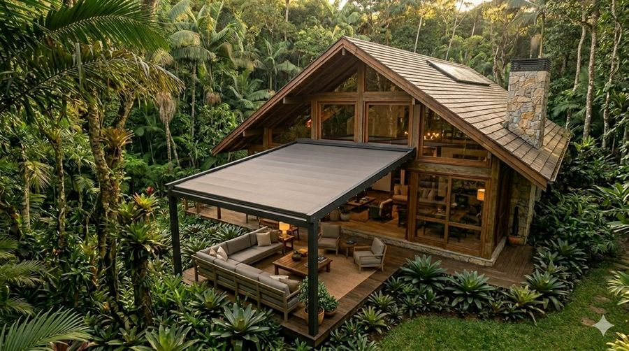
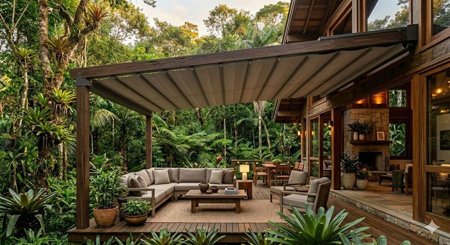

Pérgola Dinamo
- Dimensões
- 4,0 × 3,0 × 2,6 m
- Estrutura
- Alumínio com pintura grafite
- Cobertura
- Tecido retrátil acrílico
Cobertura retrátil para áreas externas. Sombra sob demanda, acabamento sofisticado e estrutura resistente para o seu deck ou jardim.
Madeira
Tecido
As cores aparecem na visualização 3D. No AR do iPhone, a cor é a selecionada antes de abrir.
Vamos pedir acesso à câmera para mostrar a pérgola no seu espaço.
Seu dispositivo não suporta AR no navegador. Funciona em iPhone (iOS 12+) e Android com ARCore. Você ainda pode girar o modelo em 3D acima. Verificar compatibilidade do meu aparelho.